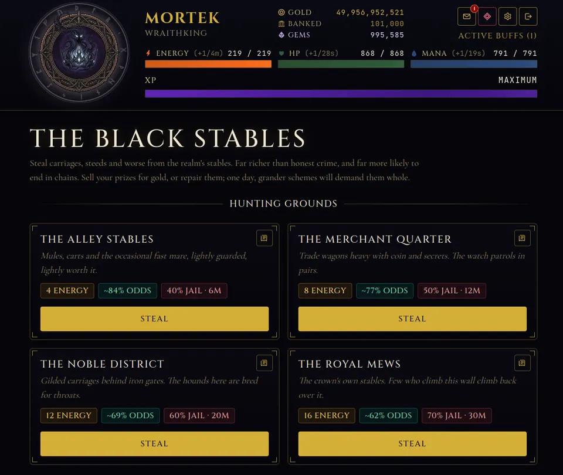

Crime is the riskiest and most colorful part of Shadowrealm: Age of Darkness, and the question I get most is how the Shadowrealm jail and crime system actually works. Who goes to jail, for how long, how do you get out, and is stealing from the Black Stables worth the risk? This guide covers all of it, using the real rules of the game.
Crime is part of the normal action list
You do not have to find a special crime menu. Early actions in Ashenvale such as Pickpocket, Mug a Traveller and Smuggle Contraband are crimes, and they use the same energy and success chance as everything else. Each action has its own jail chance when it fails, and the gentlest, Beg for Coin, has none. When a crime fails, you can be sent to jail. A failed attempt is not a total loss, since it still pays a quarter of the XP a success would have given, but no gold and no drops.
If you are brand new, relax: your first 30 actions can never put you in jail, however the roll lands. The game gives you that grace so you learn what a sentence is before you meet one. After that the risk is real. For the basics of energy and success odds, see the beginner tips.
How jail works
Jail is a timed lockout. While you are caged, the screen shows your remaining sentence. There are two ways out: wait for the timer, or have another player break you free. In the game's own words, only another soul can break you free, or you wait out your sentence.

The jail is also a place to play, not just to wait. The Most Wanted list names outlaws such as Mother Croven, a poisoner of three magistrates, and Vhalrik the Kingslayer, who carved a throne open and wore the crown for a night. These are NPC prisoners, and each has a Break Out button. Freeing prisoners earns gold and XP, and it advances a separate jailbreak rank, shown as a progress bar labelled Fugitive in the screenshot. Each city has its own jailed prisoners, with the toughest ones in the harder cities.
That makes jail a loop with two sides: the risk you take when you commit crimes, and the reward when you rescue others. Players who enjoy it tend to alternate.
The Black Stables
The stables are the higher-stakes version of crime. The game describes them as stealing carriages, steeds and worse from the realm's stables, far richer than honest crime and far more likely to end in chains. Each hunting ground shows its energy cost, its odds and its jail risk up front:
- The Alley Stables: 4 energy, about 84 percent odds, 40 percent jail chance, a 6 minute sentence.
- The Merchant Quarter: 8 energy, about 77 percent odds, 50 percent jail chance, 12 minutes.
- The Noble District: 12 energy, about 69 percent odds, 60 percent jail chance, 20 minutes.
- The Royal Mews: 16 energy, about 62 percent odds, 70 percent jail chance, 30 minutes.
Those figures are from our own screenshot for one character, so yours will differ with stats and rank, but the pattern holds: each step costs more energy, succeeds less often and jails you more often for longer.

What you steal can be sold for gold or repaired, and the game hints that grander schemes will one day demand these prizes whole. Stables are rank-gated on your live rank, so a character who has Ascended has to climb again to reach the best grounds.
Heists
Heists are bigger group jobs with a cooldown of roughly a day, and they re-lock on your live rank too. They are a long-term goal, not a day-one activity, so save them for once your stats and gear are solid.
Is crime worth the risk?
It depends on your stats and your patience. A simple way to think about it:
- Early on: crime is just your normal action list, and your first 30 actions are protected.
- Midgame: raise luck and attack so the odds move your way. Luck adds 0.5 percent per point to success chance and attack adds 0.3.
- Stables: only go where the jail time is a price you will happily pay. A 30 minute sentence at 70 percent risk is a real cost if your energy is full and nothing else is running.
- Safe days: some days the right choice is to skip crime and spend energy elsewhere, because the stronghold and the daily quests do not care about jail.
Crime in Shadowrealm is a risk and reward dial: higher stakes pay more and jail you more often.
Tips for staying out of trouble
- Check the odds and jail chance on a card before you press Steal.
- Do not let a long sentence cost you a stronghold build. Queue builds first, then take risks.
- Use the wait. Jail is a good time to close the tab, since your energy keeps refilling.
- Try the Most Wanted list. Rescuing prisoners builds a rank you cannot get any other way.
To see where crime fits into a long-term plan, read how to rank up faster.
Try it
Pick a character name, commit your first crime, and see whether you are a cautious thief or a reckless one. Play free at playshadowrealm.com.
Frequently Asked Questions
What happens when I go to jail in Shadowrealm?
Jail is a timed lockout. You either wait out the sentence or another player breaks you free. You can also try breaking out prisoners yourself from the Most Wanted list, which earns rewards and builds a separate jailbreak rank.
Can a new character be jailed?
Not at first. A character's first 30 actions can never send them to jail, however the roll lands. After that, a failed crime can result in a sentence, so check the odds before committing.
Are the Black Stables worth it?
They pay far more than honest crime but jail you more often. In our screenshot the four grounds range from about 84 percent odds and 40 percent jail risk up to about 62 percent and 70 percent, so pick the ground that matches your stats.